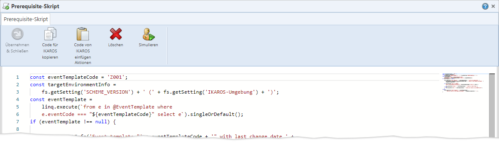

TEXT SCRAMBLING in TRIAL VERSION OUTPUT! In evaluation mode, Help+Manual will scramble individual characters in random words in your published output files. This is a limitation of the free trial version. This help system was created with an evaluation copy of Help+Manual.

Abb. 45: Der Bearbeitungsdialog für Transportkontrollskripte
Der Dialog besitzt ein Textfeld, in das Sie den Custom Code hineinkopieren und dort auch bearbeiten können.
Beachten Sie jedoch, dass es sich hierbei nicht um den Custom-Code-Editor aus IKAROS handelt, sondern um einen vereinfachten Code-Editor. D. h. er bietet u. a. keine Code-Vervollständigung, keine einheitliche Quelltext-Formatierung oder die Möglichkeit des Debuggens.
Die übliche Vorgehensweise für die Erstellung und das Testen von Transportkontrollskripten ist es daher, im TRMS das Transportkontrollskript im TRMS mit Platzhalter-Code anzulegen, die Schaltfläche „Code für IKAROS kopieren“ zu nutzen und mit dem so erhaltenen Code in IKAROS das Skript zu programmieren und dort zu testen. Den fertigen Code fügen Sie dann im TRMS im Bearbeitungsdialog mit der Schaltfläche „Code von IKAROS einfügen“ wieder ein.
Ein lauffähiges Skript können Sie mit der Schaltfläche „Simulieren“ auch vom TRMS aus schreibgeschützt in einem Zielsystem ausführen und auch ein Protokoll zum Simulationslauf erhalten.
Schaltflächen
Symbol |
Schaltfläche |
Beschreibung |
|---|---|---|
|
„Übernehmen“ [Strg] + [H] |
Übernimmt den Text als Code für das Transportkontrollskript. •In Changes und Change Sets müssen Sie noch speichern, damit der Skriptcode auch endgültig in die Datenbank geschrieben wird. •Falls die Paketdatei eines Changes/Change Sets bereits in der Datenbank vorliegt, wird dort automatisch die neueste Skriptversion hinterlegt, ohne dass die Paketdatei neu erzeugt werden muss. |
|
„Code für IKAROS kopieren“ [Strg] + [Alt] + [C] |
Kopiert den gesamten Skript-Code in die Zwischenablage. Dabei wird der Code automatisch um weiteren Code angereichert, der ihn im JavaScript-Editor in IKAROS direkt ausführbar macht, indem das „trms“-Objekt mit seinen Methoden generisch nachgebildet wird. Wenn Sie den Code in IKAROS weiterentwickelt haben, kopieren Sie ihn im Ganzen (inkl. des angereicherten Codes) und nutzen dann zum Einfügen im Script-Editor im TRMS die Schaltfläche „Code von IKAROS einfügen“. Dadurch wird der Script-Code ohne den generisch angereicherten Code eingefügt. Die Schaltfläche ist erst aktiv, wenn mindestens ein Zeichen im Editor eingegeben wurde. |
|
„Code von IKAROS einfügen“ [Strg] + [Alt] + [V] |
Leert den gesamten Script-Editor und fügt den Inhalt der Zwischenablage ein. Dabei wird der generische Code, der beim Kopieren mittels der Schaltfläche „Code für IKAROS kopieren“ angereichert wurde, automatisch entfernt. |
|
„Löschen“ [Strg] + [D] |
Löscht den Code des Skripts, sodass es nicht mehr in das trms4-Paket aufgenommen wird. •Changes und Change Sets müssen Sie zusätzlich noch speichern, damit das Löschen des Skriptcodes auch endgültig in der Datenbank erfolgt. •Falls die Paketdatei eines Changes/Change Sets bereits in der Datenbank vorliegt, wird das Skript automatisch daraus entfernt, ohne dass die Paketdatei neu erzeugt werden muss. |
|
„Simulieren“ [F5] |
Nur in Initialisierungs- und Prerequisite-Skripten. Ruft zunächst einen Dialog auf, in dem Sie sich an einem Zielsystem anmelden müssen. Anschließend führt das TRMS den Skript-Code im Zielsystem schreibgeschützt aus. •Falls im Skript Meldungen erzeugt wurden, erscheint ein Transportprotokoll für die simulierte Ausführung. •Bei technischen Fehlern erhalten Sie eine entsprechende Fehlermeldung. •Andernfalls erhalten Sie einen Hinweis, dass das Skript ohne Meldungen durchgelaufen ist. |
|
„Nach Erfolg simulieren“ [F5] |
Nur in Finalisierungs-Skripten. Wie bei „Simulieren“, aber der Zugriff „trms.transportSuccessful“ liefert im Skript „true“. |
|
„Nach Fehler simulieren“ [F6] |
Nur in Finalisierungs-Skripten. Wie bei „Simulieren“, aber der Zugriff „trms.transportSuccessful“ liefert im Skript „false“. |
„Simulieren“ (Test-Ausführung von Transportkontrollskripten)
Sie können den Custom Code eines Transportkontrollskripts schreibgeschützt in einem IKAROS-Zielsystem ausführen. Dazu müssen Sie die Schaltfläche „Simulieren“ (für Prerequisite- und Initialisierungs-Skripte) bzw. „Nach Erfolg simulieren“ oder „Nach Fehler simulieren“ (für Finalisierungs-Skripte) im Bearbeitungsdialog für das Skript betätigen.
•Falls Sie im Skript mit den Methoden „trms.reportInfo()“ oder „trms.reportError()“ Meldungen ins Protokoll schreiben, erhalten Sie bei Abschluss des Simulierens einen Dialog mit den Protokolleinträgen.

Abb. 46: Dialog mit Ergebnissen aus simuliertem Transportkontrollskript
•Falls technische Fehler auftreten (z. B. Syntaxfehler in Custom Code), erhalten Sie eine entsprechende Fehlermeldung und die Skriptausführung wird sofort abgebrochen.
•Falls das Skript ohne technische Fehler durchläuft und auch keine Protokolleinträge gemacht wurden, erhalten Sie eine Erfolgsmeldung: „Das Skript wurde ausgeführt.“